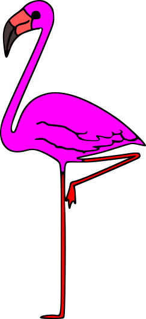
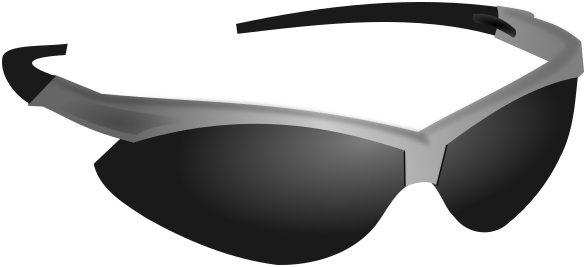
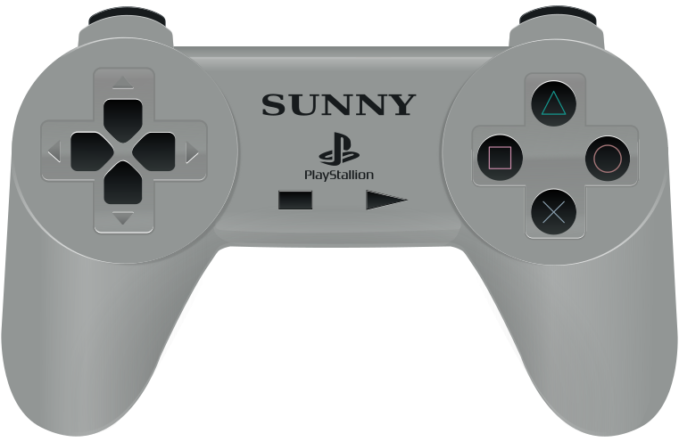
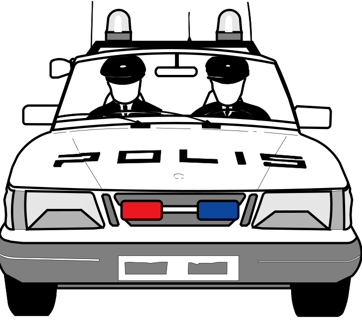
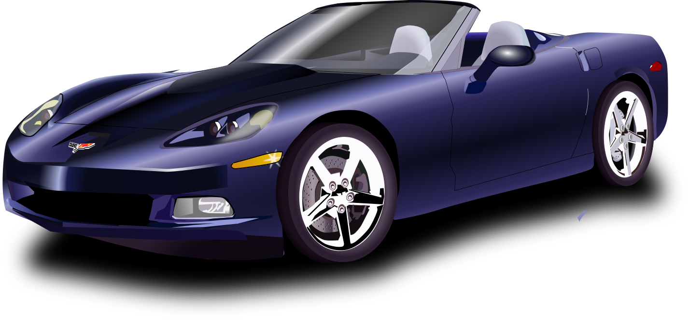
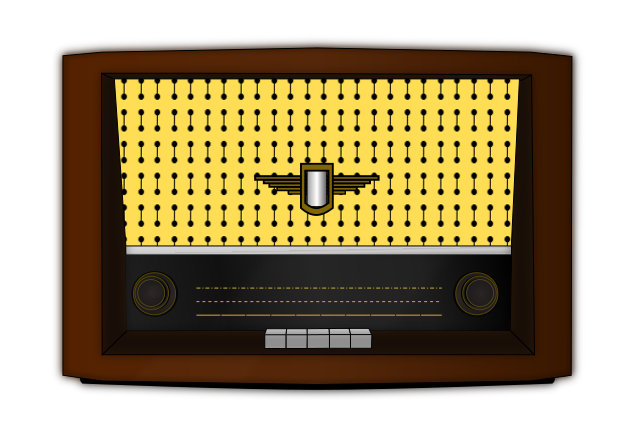

給沒玩過的人看的
GTA
歷代介紹
資料截至 2026-11-18
GTA 是什麼？
- 玩家在一大片地圖裡自由移動，自己決定先做什麼，不必一關接一關。
- 玩家扮演罪犯，用任務推進故事。
- 由 David Jones 與 Mike Dailly 在 DMA Design 創立，現在叫 Rockstar North。
- Rockstar Games 發行；第一代是 1997 年。

三個時代
由上往下看
最早的階段，用俯視的平面畫面呈現城市。
立體城市
從 GTA III 開始，改用立體畫面。
高畫質寫實
從 GTA IV 開始，進入高畫質（HD）主機世代，細節更寫實。

發售時間軸
GTA Online
預定 11-19
實際狀態待查
藍＝2D 橘＝3D 粉＝HD （GTA VI 的時代歸屬待查）
2D：從俯視開始
俯視畫面，在任務中賺分數過關。
原名 Race'n'Chase，原本扮演追捕罪犯的警察；團隊覺得太無聊，改成扮演罪犯。
新增「幫派尊重度」。
替一個幫派做事會提高他們的尊重，但會失去他們對手的尊重。

3D：城市變立體
第一款 3D，也是第一款第三人稱視角（鏡頭跟在角色身後）。
主角第一次開口說話；可以買下事業，例如計程車公司。
地圖是一整個州；吃喝與運動會改變主角的外型和能力。
三座虛構城市
Liberty City
以紐約為原型。
GTA III、GTA IV 都在這裡。
Vice City
以邁阿密為原型。
1986 年的故事（Vice City）。
San Andreas
原型是加州與內華達州。
洛聖都、聖菲耶羅、拉斯文圖拉斯。
三座城市從初代 GTA 就有，之後在每個時代被重新設計。
HD：寫實與三位主角
系列重啟，風格轉向寫實。
手機成為核心：用來聯絡朋友、約他們一起活動。
三位主角可隨時切換，劇情圍繞搶案。
截至 2026 年 9 月，出貨將近 235 million 套。

GTA Online
GTA V 的線上多人部分，玩家用自己創造的角色在同一張地圖遊玩。
2013-10-01 上線，靠持續的免費更新增加內容。
PS3、Xbox 360 伺服器 2021-12-16 關閉。
最新一筆更新：2026-07-14。
截至 2026 年 9 月，每天營收超過 US$1 million。
GTA VI
截至 2026-11-18 的資料；發售狀態待查
Jason 與 Lucia 捲入全州規模的犯罪陰謀。
舞台是以佛羅里達為原型的 Leonida 州。
預定 2026-11-19，平台為 PS5、Xbox Series X|S。
實際是否已發售：待查（尚無官方確認）。
每一代都有的玩法
自己挑要接哪些任務，城市可以隨時自由探索。
之後模仿這套公式的遊戲，被稱為「GTA clone」。
犯法時畫面出現星星，星星越多，警方追捕越猛烈。
最多五顆或六顆星。
Hot Coffee 事件
為了拿到 M 級（ESRB 的 17 歲以上分級）刪減內容，但程式碼還留在遊戲裡。
玩家找出並公開，下載超過 100 萬次。
ESRB 改評 AO（成人限定），澳洲禁售，FTC 警告。
ESRB 宣布：沒揭露內容的開發商最高罰 US$1 million。
教學重點：遊戲內容也受社會與制度規範。
小測驗
1. GTA III 的新東西是什麼？
2. 哪一代的主角是系列第一個會開口說話的？
3. 通緝等級的星星越多，代表什麼？
一頁回顧
俯視 → 立體 → 高畫質寫實。
自由探索、接任務、經營事業、培養角色。
GTA Online 讓玩家在同一張地圖共玩。

參考資料
- raw/01 Wikipedia：Grand Theft Auto（系列）
- raw/02 Wikipedia：GTA III
- raw/03 Wikipedia：GTA V
- raw/04 Rockstar 官方：GTA VI 頁面
- raw/05 TechRadar：GTA VI 延期新聞
- raw/06 Wikipedia：GTA VI
- raw/07 Wikipedia：GTA（1997）
- raw/08 Wikipedia：GTA 2
- raw/09 Wikipedia：Vice City
- raw/10 Wikipedia：San Andreas
- raw/11 Wikipedia：GTA IV
- raw/12 Wikipedia：GTA Online
內容整理自本專案 wiki；來源之間有出入處已在 wiki 標「來源矛盾」。圖像為 CC0 素材、字型為開源授權，列於 asset/CREDITS.md。資料截至 2026-11-18。